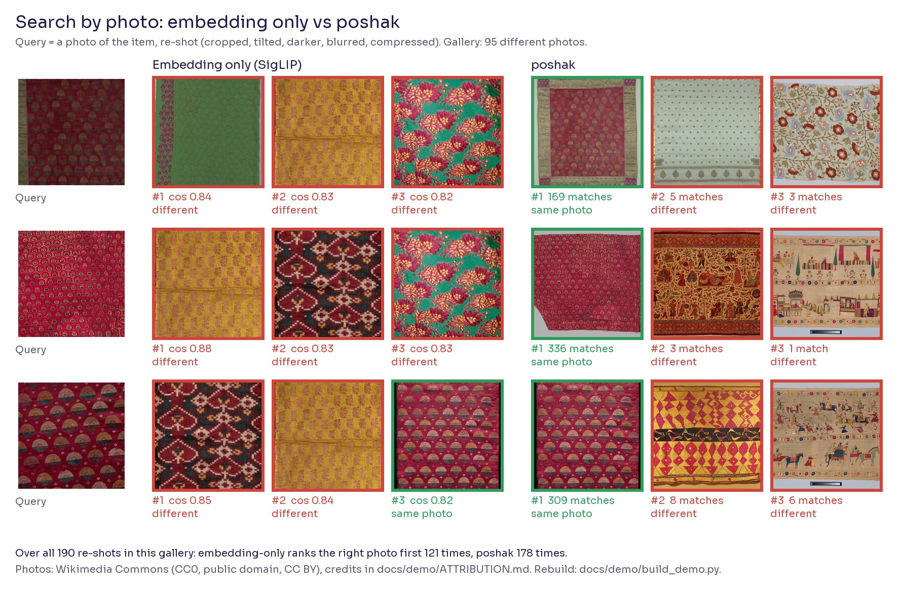
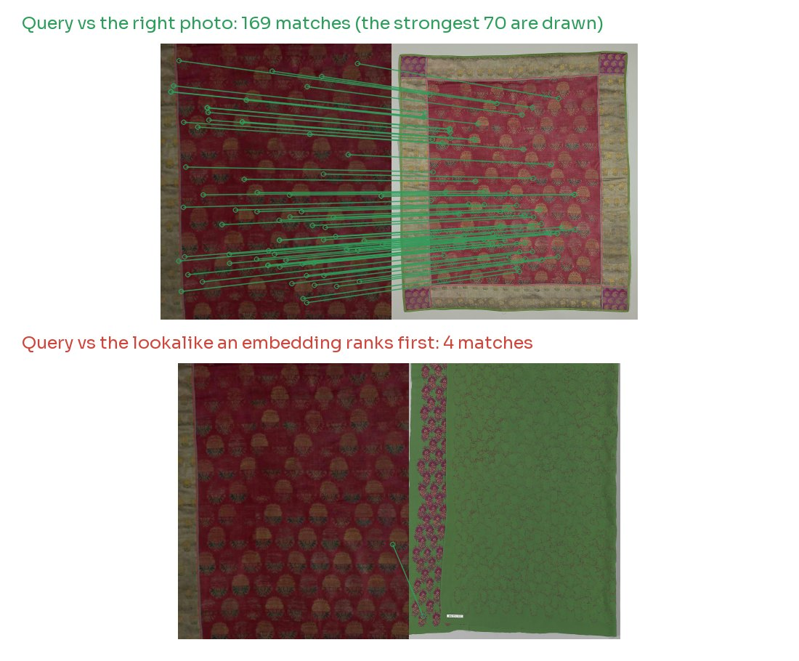
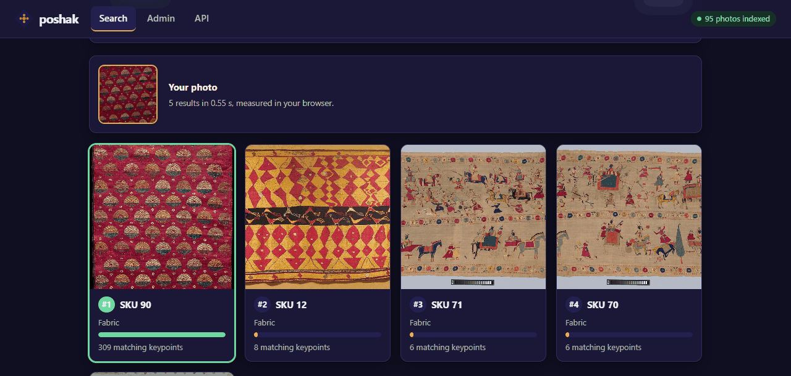
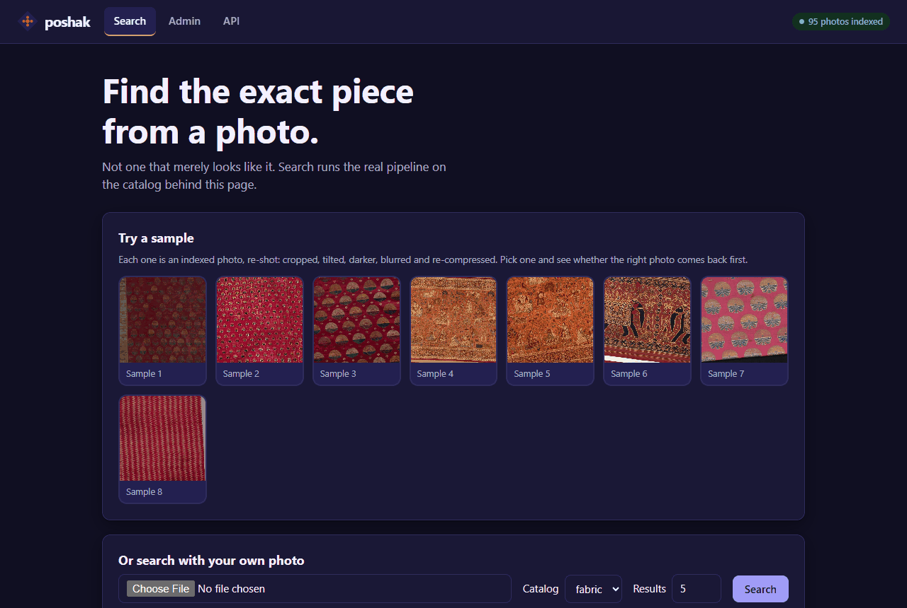
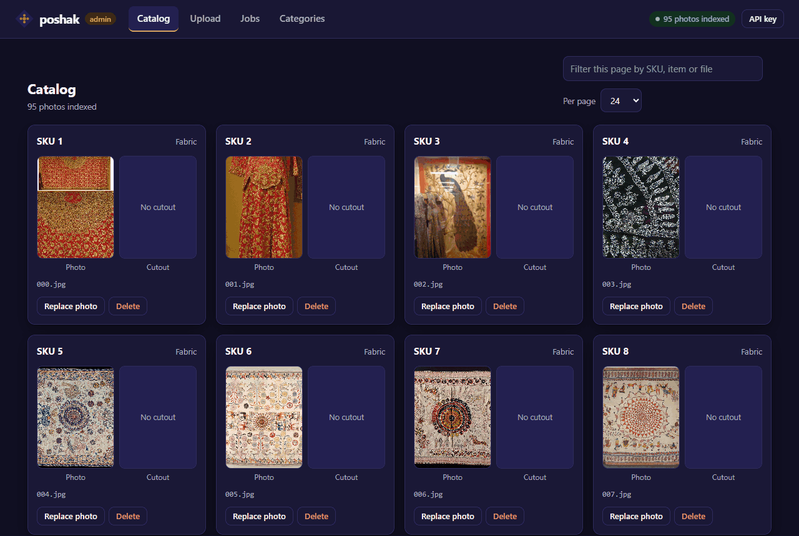
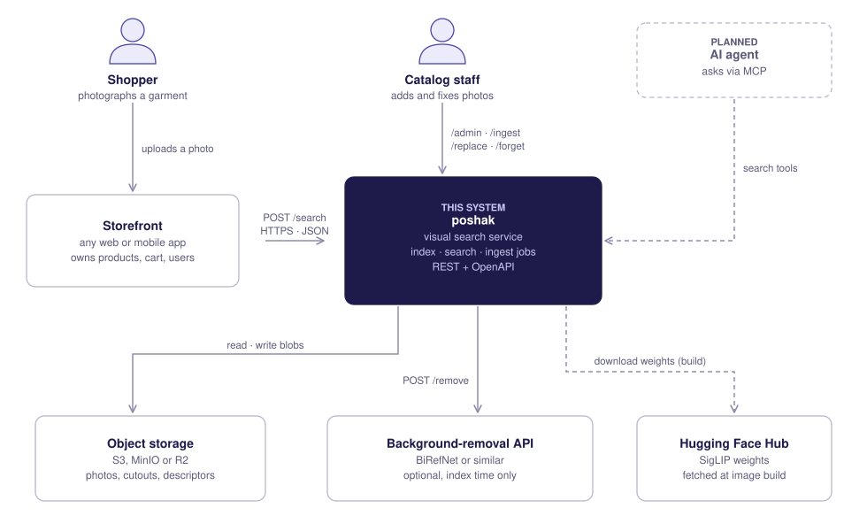
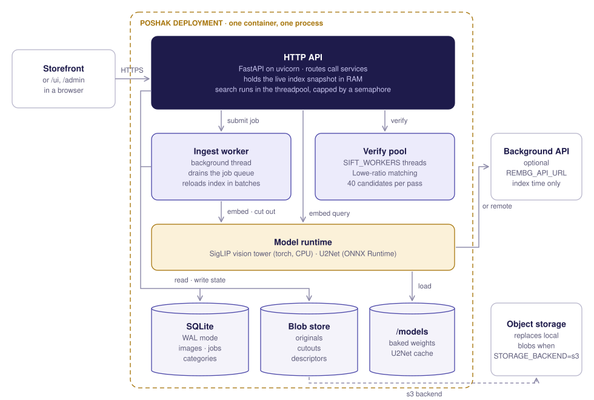
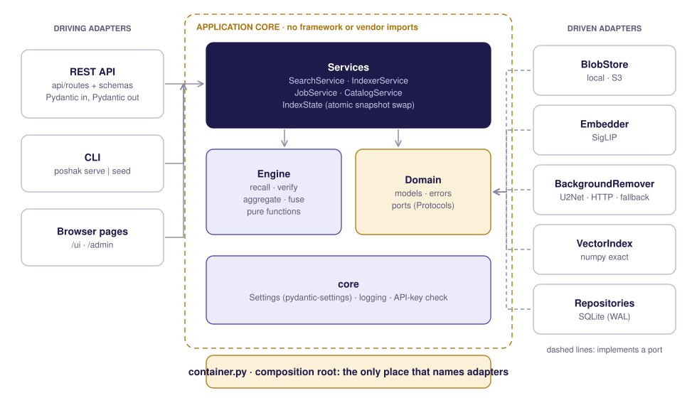

Embeddings find lookalikes. poshak finds the exact piece.
A hundred sherwanis share one cut and one colour. They differ in the zari, the butis, the border. poshak matches those details, so a phone photo finds the right SKU. Open source, and it runs on a 2 GB CPU box.
Illustration, not data. Each thread is one matching keypoint. The exact piece keeps most of its threads as the photo degrades; the lookalike never shared more than a few.
Look at everything cheaply. Check the few that matter.
poshak scans every photo in the catalog with a quick keypoint match, fully checks a shortlist, and stops the moment one SKU is clearly ahead. For most queries the heavy image model never runs.
Scan everything, cheaply
Match the strongest 300 keypoints of your photo against every photo in the catalog. No embedding model needed yet.
Check the few that matter
Fully match a shortlist. A match counts only if the two keypoints pick each other, which ignores the repeating patterns that fool a simple count.
Stop when it is clear
One SKU far ahead? Done. If not, run the embedding model once, widen the shortlist and blend both signals.
- Scan every photo with the strongest 300 keypoints. No embedding yet.
- Fully match the best five.
- One SKU clearly ahead? Stop. If not, compute the embedding, widen the shortlist and blend the two signals.
Illustration of the algorithm described in ADR 0006. The photos here are generated patterns; the counts are made up to show the logic. The real results are below.
Not a mock-up. Check the photos yourself.
95 photographs of Indian textiles and garments from Wikimedia Commons, many of them near-identical lookalikes. 190 searches, each with a re-shot of a gallery photo: cropped, tilted, darkened, blurred and re-compressed.




- Why the exact photo wins. It shares 169 keypoints with the query. The lookalike an embedding prefers shares 4.
- What the demo is. A query is a re-shot of a gallery photo, not a second photograph of the same object. That is easier than real life, so see the harder case below.
- No peeking. poshak's settings were fixed on a different, private catalog before this gallery existed. Nothing was tuned on these photos.
- Check it. docs/demo/build_demo.py downloads the photos and rebuilds both figures. Photo credits.
A search page and an admin, included.
Pick a sample or drop in a photo. The right one comes back first, with the number of keypoints that matched. Real screenshots of the demo gallery.


/ui. The green card is the right photo: 309 matching keypoints, against 8 or fewer for the lookalikes.



/admin: catalog, upload, jobs and categories.Small on purpose. Every part swappable.
One container, one SQLite file, no GPU. A pure ranking engine sits in the middle. Storage, the embedding model, background removal and the vector index plug in through ports, so a new backend is one class and one line of wiring.



- A pure engine. Ranking does no I/O, so it is easy to test. A golden test pins the rankings, so a refactor can never change a result unnoticed.
- Ports and adapters. Local disk or S3, SigLIP, U2Net or a remote remover, SQLite and an exact vector index all sit behind small interfaces. A test enforces the layer rules.
- One process on purpose. The index lives in RAM, so you scale with more containers, not more workers. It is sized for a 2 GB machine.
- Read the design. Sequence diagrams, the data model, failure modes and the scaling path are in the architecture document.
From 5.4 seconds to 0.7. In real time.
Both searches run on the same laptop CPU: an Intel i5-7200U, two cores, no GPU. Press the button and watch them actually take that long.
Beforetwo passes, cutout, 80 matches
poshak v2scan, match 5, stop
All of them, caveats included.
Recall@1: how often the right SKU is ranked first. Every figure is on held-out test queries that were never used to choose a setting.
A real shop catalog
408 SKUs, 12-megapixel phone photos. One shop, mostly sherwanis.
| Query | n | Before | v2 |
|---|---|---|---|
| Cloth, mild re-shot | 100 | 96% | 98% |
| Cloth, heavy re-shot | 100 | 89% | 93% |
| Fabric, both levels | 50 | 92% | 96% |
| A different photo of the same SKU | 99 | 30% | 37% |
DeepFashion In-shop sample
Public research dataset, 224 px studio photos. Metrics only; no images are redistributed.
| Query | n | Before | v2 |
|---|---|---|---|
| Mild re-shot | 37 | 95% | 100% |
| Heavy re-shot | 37 | 38% | 65% |
| A different view of the same item | 73 | 52% | 78% |
Running in a minute.
1. Start it
git clone https://github.com/vivekkushalch/poshak && cd poshak docker compose up -d --build curl localhost:8088/health
2. Index a photo, then search
curl -F image=@swatch.jpg -F photo_name=zari_42.jpg \ -F sku_id=42 -F item=Fabric localhost:8088/ingest curl -F image=@query.jpg -F category=fabric \ -F top_k=3 localhost:8088/search
3. Under a thousand photos? Turn on the fast ranker
# set RANKER=v2 in .env, restart, then once: docker compose -f compose.prod.yaml exec \ poshak poshak refresh-descriptors
Then open
/ui search by photo from a phone /admin upload, watch indexing, fix cutouts /docs the API, with schemas